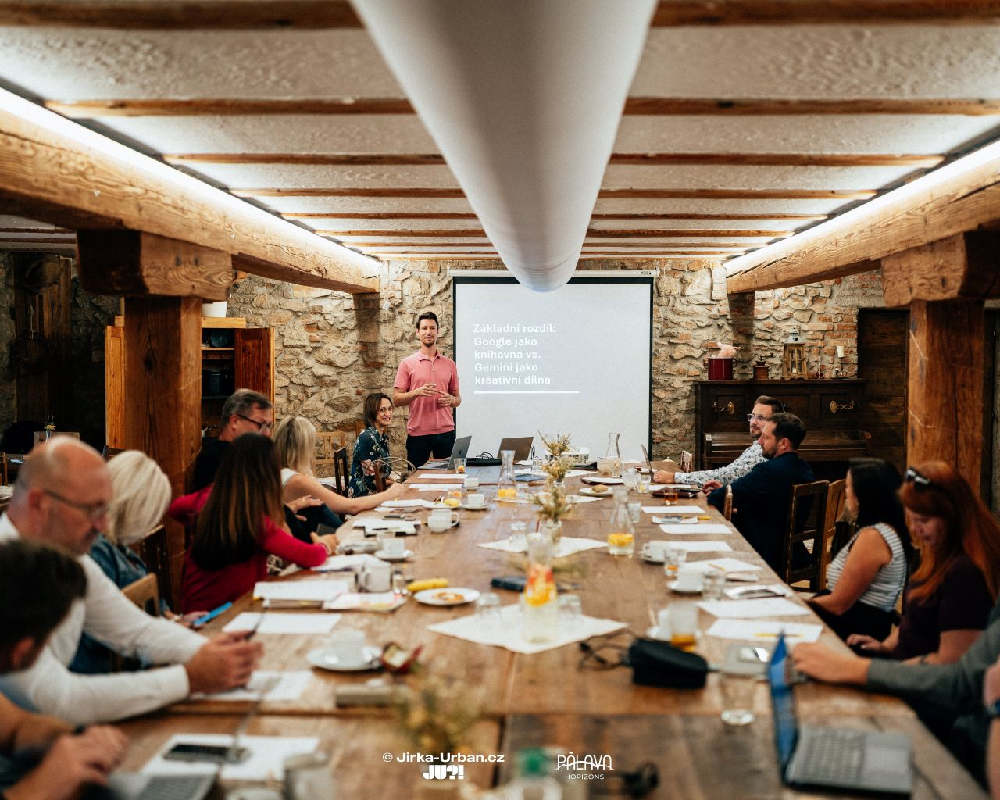
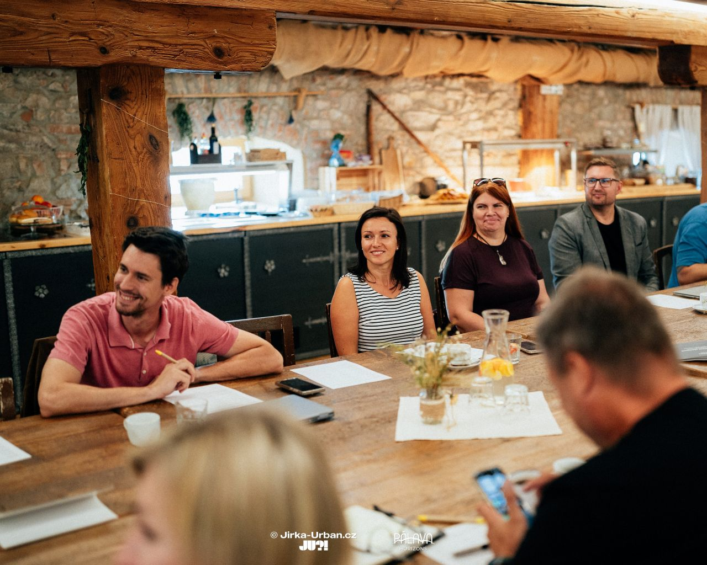
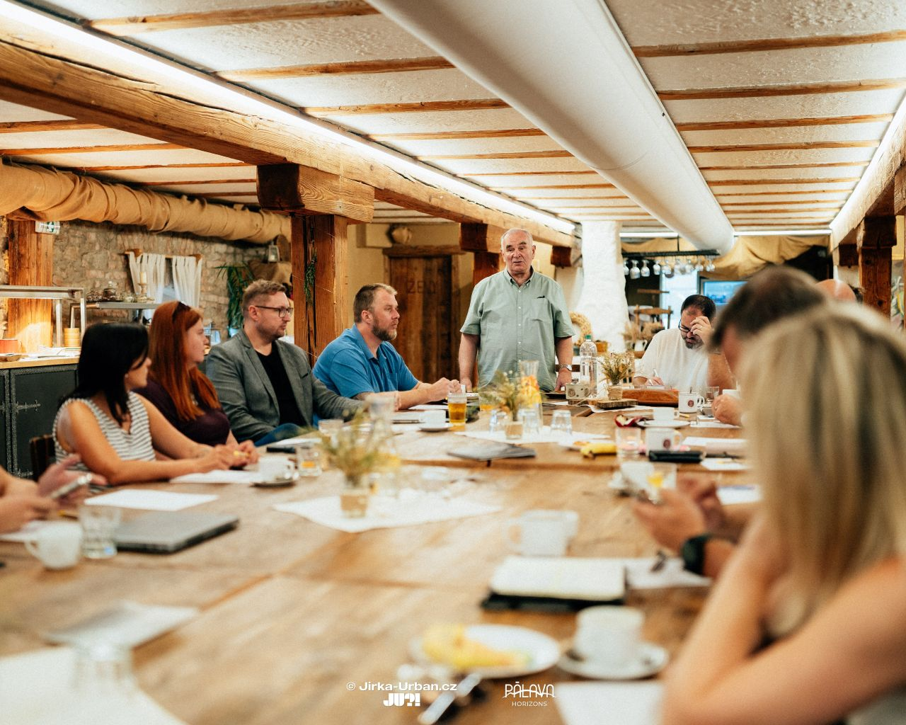
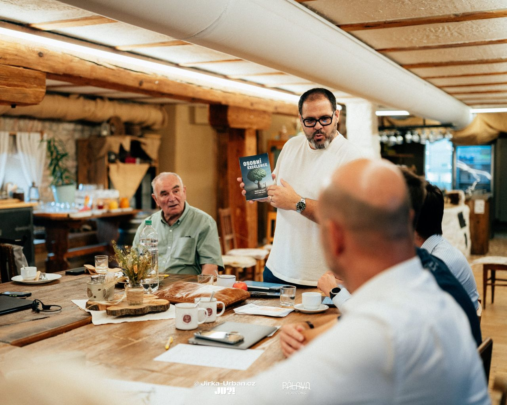
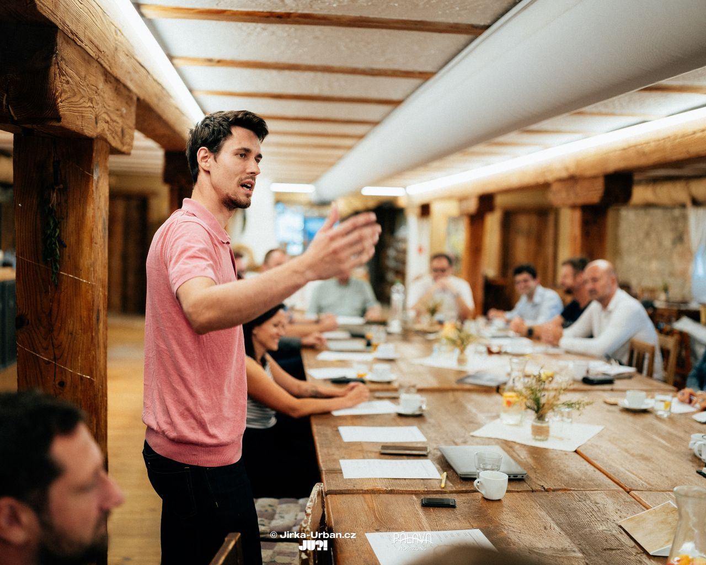
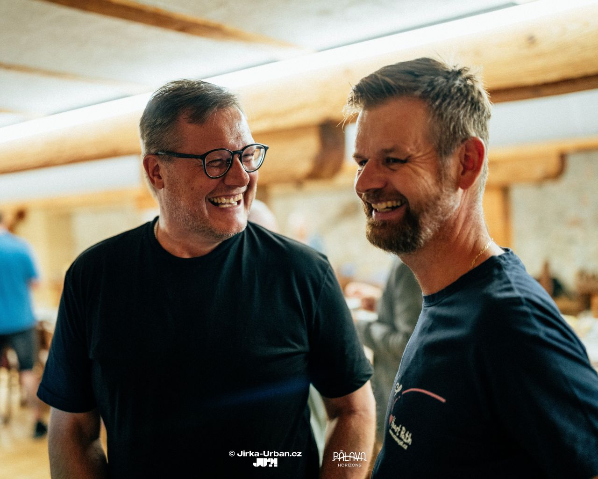

OhlĂ©dnutĂ za 12. setkánĂm klubu Pod Pálavou
V ĂşterĂ˝ 2. zářà dopoledne probÄ›hlo v malebnĂ©m prostĹ™edĂ KrÄŤmy a hotelu u CĂsaĹ™skĂ© cesty v BranišovicĂch jiĹľ 12. setkánĂ našà podnikatelskĂ© komunity Pod Pálavou. Dopolednem nás provedla Veronika JankoviÄŤová, která hned v Ăşvodu vystihla hlavnĂ myšlenku našich setkávánĂ:
„Je strašně důležité, abychom se tvořili navzájem, abychom si nastavovali zrcadla.“
Tato myšlenka je podle nĂ základem skuteÄŤnĂ©ho networkingu. Nejde jen o pĹ™edávánĂ vizitek, ale o vzájemnou inspiraci v detailech – v tom, jak pracujeme, jak se prezentujeme nebo jak si dÄ›láme radost ze Ĺľivota. PrávÄ› tato ochota bĂ˝t si navzájem pĹ™Ăkladem dává našà komunitÄ› skuteÄŤnou hodnotu.

V duchu tohoto dialogu se neslo celĂ© dopoledne. Veronika postupnÄ› dala slovo klĂÄŤovĂ˝m ÄŤlenĹŻm, aby pĹ™edstavili pilĂĹ™e klubu. Jiřà Juránek promluvil o našà misi a vizi, Gabriel KoĹľĂk pĹ™edstavil etickĂ˝ kodex a Pavel Herman se zamyslel nad propojenĂm byznysu a přátelstvĂ. Prostor samozĹ™ejmÄ› dostal kaĹľdĂ˝ z nás, abychom pĹ™edstavili svĂ© firmy a projekty.
MĂsto klasickĂ˝ch pĹ™ednášek jsme se tentokrát ponoĹ™ili do praktickĂ©ho workshopu. Gabriel KoĹľĂk nás provedl svÄ›tem AI nástrojĹŻ a jejich reálnĂ˝m vyuĹľitĂm v podnikánĂ. O budoucĂ směřovánĂ se postaral Tomáš Hampl, kterĂ˝ nás nalákal na atraktivnĂ technologická vylepšenĂ, která nás ÄŤekajĂ na podzim.
Na závÄ›r jsme si jako vĹľdy dali slovo podruhĂ©. ZpÄ›tnou vazbu formou Talk and Reflect vedl Radek OsiÄŤka, ale o tom, jak probÄ›hla, si povĂme zase přÚtÄ›. DÄ›kujeme všem za dopoledne plnĂ© skvÄ›lĂ˝ch myšlenek a novĂ˝ch spojenĂ.
Na fotografiĂch od Jirky Urbana si mĹŻĹľete opÄ›t pĹ™ipomenout vÄŤerejšà klubovou atmosfĂ©ru.





PĹ™idejte se k nám přÚtÄ›!
Dalšà setkánĂ probÄ›hne 16. zářà 2025 od 9:00 do 12:00 opÄ›t v KrÄŤmÄ› a hotelu u CĂsaĹ™skĂ© cesty.
REGISTROVAT SE ZDE Přidat do kalendáře